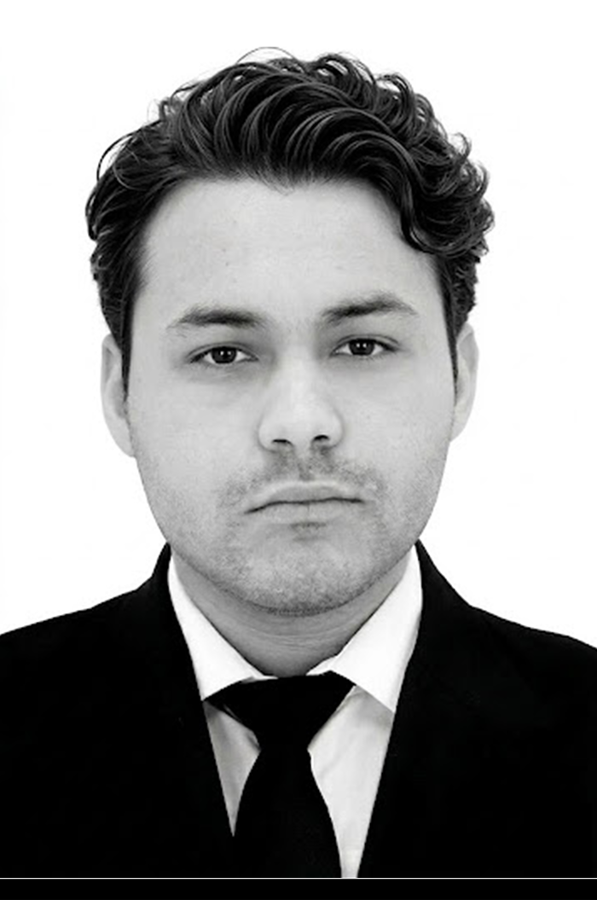

07
03.
03.
Arquitecto · Архитектор · Architect · 建築師
建築與設計 · Архитектура и дизайн
Giovanny.
Giovanny.

Egresado de la licenciatura en Arquitectura por la Universidad Autónoma de Ciudad Juárez (UACJ). Mi práctica profesional abarca el dibujo técnico CAD, actualización de proyectos ejecutivos y el modelado de instalaciones e ingenierías (MEP).
Especialmente orientado hacia el lenguaje visual y espacial del Mid-Century Modern, proyectos residenciales boutique, diseño de interiores y la integración consciente de vegetación regional en paisajes áridos.
Selecciona la pestaña para visualizar el archivo o utiliza las descargas directas: